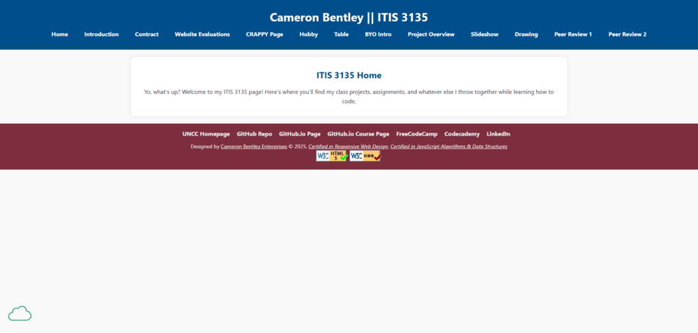

Site Evaluation
Bentley, Cameron

ITIS 3135 Index
Evaluation Checklist
- Page Submission: Leads directly to the page to be reviewed. ✔️
- Folder Names: No spaces or upper-case letters in folder names. ✔️
Design
- Contrast & Font Sizing: Page has sufficient contrast and font sizing for readability. ✔️
- CSS Usage: Page uses the standard .css file (unless a unique/standalone/embedded one is required). ✔️
CRAP Design Principles
- Contrast: Sufficient contrast in design elements. ✔️
- Repetition: Design elements are consistently repeated. ✔️
- Alignment: Proper alignment of text, images, and other elements. ✔️
- Proximity: Related items are grouped closely together. ✔️
Page Structure
- Header: Contains a site/brand header with an
h1 tag. ✔️
- Main Content: Starts with the name of the page as an
h2. ✔️
- Brand Tagline: Page includes a brand tagline somewhere consistently across pages. ✔️
- Footer: Contains footer with menu for user’s pages. ✔️
- Additional Notes: Company site's footer needs link back to main site.
Additional Considerations
- Navigation: Nav bar can be a bit confusing to look at when first looking at it because its vertical.
Additional Notes
- Stop: Avoid nesting folders unnecessarily within course directory.
- Start: Use more descriptive alt text for images and consider a more polished footer layout.
- Continue: Great use of relative links and consistent navigation—keep it up!